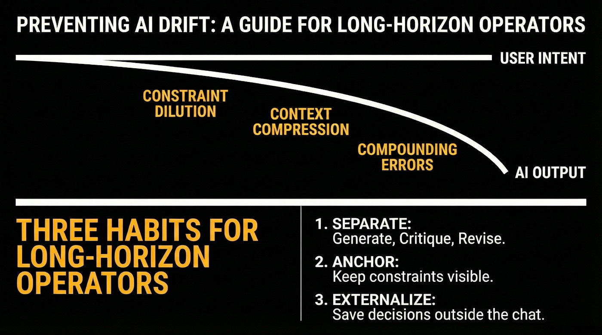

How to Work Reliably With Conversational AI Over Time
An onboarding guide for long-horizon use

Purpose
This is an entry point for people who use conversational AI for real work and notice a common pattern: the system starts strong, stays fluent, and still quietly drifts away from the original goals, constraints, or source material.
This is not a research paper. It is not a protocol. It is not a claim about what AI "is."
It is a practical orientation for how to work with these systems without fooling yourself. This guide focuses on interaction practices, not model internals or system architecture.
Quick start (30 seconds)
If you only take three habits:
- Separate generate from critique from revise.
- Keep constraints visible and checkable.
- Externalize anything you cannot afford to lose.
These habits help prevent silent drift in long conversations where output stays fluent but fidelity erodes.
Who this is for
- People using AI for writing, planning, analysis, coding, or long projects
- People who upload documents and assume the AI "read them"
- People who rely on a conversation staying aligned across many turns
What this document is not doing
- It is not arguing that AI is sentient, conscious, or a moral patient.
- It is not claiming an AI has stable identity or persistent memory by default.
- It is not asking you to trust the AI. It is helping you calibrate trust.
The core observation
A conversational AI can remain fluent and internally consistent while becoming progressively less faithful to:
- your original intent
- your earlier constraints
- the structure of a plan
- details in a referenced document
When that happens, the interaction can feel coherent while the work product quietly diverges.
Example (common): You ask for a plan with three locked requirements. Ten turns later the plan is elegant, but one locked requirement has disappeared. Nothing "breaks." The output simply slides.
Example (subtle): You are drafting a technical document with specific terminology from an uploaded standard. After 15 turns of refinement, the prose is polished, but two domain-specific terms have been replaced with common synonyms that change the meaning. The text reads better but is now technically incorrect.
Why this catches people
Most users carry an implicit assumption: if the system was correct a moment ago, it will stay correct unless it visibly fails.
Long-horizon use breaks that assumption. Two things can be true at once:
- the system sounds confident
- the work is drifting
What causes drift in practice
You do not need to understand the internals to use this approach effectively. A simple behavioral model is enough.
In extended interactions:
- Earlier constraints get diluted by newer context.
- The system compresses what it thinks matters, often differently than you would.
- The conversation accumulates soft assumptions that were never validated.
- Errors compound because each new step builds on the last.
One practical way to think about it: the system optimizes for plausibility in the current moment, not for preserving your original intent over time.
The key danger is that drift is often subtle. By the time you notice, you have already built on it.
A practical mental model
Treat conversational AI as:
- a fast generator of plausible drafts
- a strong pattern synthesizer
- a capable collaborator when you provide structure
Do not treat it as:
- a self-monitoring verifier
- a reliable long-term memory store
- an authority that can certify its own correctness
The operator's rule set
If you adopt only a few habits, adopt these.
Rule 1: Creation and evaluation are different jobs
Most first-pass responses are minimum-viable drafts. They can be useful, but are rarely the best the system can do.
Separate the loop:
- generate
- critique
- revise
- repeat until improvements plateau
Rule 2: Make constraints explicit and keep them visible
Constraints that live only in your head will not reliably persist.
Good constraints are: short, concrete, repeatable, and checkable.
Examples:
- Do not introduce new claims without a cited source.
- Keep the output under 800 words.
- Preserve these three requirements: A, B, C.
- If anything is uncertain, label it as uncertain.
Rule 3: Re-ground on purpose, not on vibes
When a task runs longer than a few turns, periodically restate:
- the goal
- the constraints
- what has been decided
- what is still unknown
- what counts as success
This is not redundancy. It is integrity control.
Rule 4: Restarting is not defeat
Starting a fresh instance can be a best practice when:
- the plan has become foggy
- outputs become generic or oddly confident
- earlier constraints stop being respected
- the conversation has become too long to audit
A restart is not giving up. It is choosing a clean state, often the smartest move.
Rule 5: Externalize what matters
If it matters, it should exist outside the chat.
Examples:
- a short project brief
- a list of locked decisions
- a checklist for verification
- a set of definitions you do not want drifting
Externalization makes your work portable across tools, models, and time.
The document upload misconception
Uploading a file does not automatically mean:
- the system read it fully
- the system retained it
- the system can quote it correctly later
- the system will use it faithfully after many turns
If the content matters, use verification habits:
- ask for a table of contents or section map first
- ask for targeted extraction with quotes
- ask it to point to where in the document each claim comes from
- ask it to regenerate a key paragraph using only direct quotes from the source, then compare side-by-side
- re-check after long interaction, because retention can degrade
Common misconceptions (short corrections)
- "It sounds confident, so it must be right." Confidence is not evidence.
- "It didn't object, so it agrees." Silence is not validation.
- "If it made a mistake, the model is broken." Many failures are workflow failures.
- "If I upload a document, it read it." Upload is not ingestion, and ingestion is not stable retention.
- "If it worked last time, the same prompt will work now." Model updates, context differences, and non-deterministic behavior mean past success does not guarantee future consistency.
What this unlocks if you work this way
With explicit evaluation loops and re-grounding, you can often get:
- higher quality writing and reasoning
- fewer compounding errors
- clearer uncertainty labeling
- better long-form coherence
- more defensible outputs
The system does not self-improve. Your method improves the interaction.
How to proceed from here
If you want a low-friction path:
- Use these rules in a real task for one week.
- Notice where drift shows up anyway.
- Add a lightweight checkpoint habit:
- restate goal and constraints
- verify key claims
- externalize decisions
Further reading
These practices emerged from systematic documentation of long-horizon AI interactions across thousands of instances since 2022 and multiple architectures. The behavioral patterns described here, including constraint dilution, contextual drift, and fidelity erosion, are not incidental bugs. They are structural features that become research objects when studied systematically.
For formal treatment of coherence-fidelity divergence and interaction-level analysis, see SF0037: Citation Verification Protocol, SF0038: Ingestion Verification Protocol, and SF0039: Context Representation Drift.
Full framework documentation available at the Synthience Institute community on Zenodo.